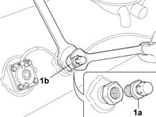
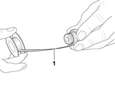

1043A26 gpl system pipes/connections - r r
- Path
- Procedures > 10 ENGINE UNIT > 1043 LGP TANK AND PIPES > 1043A gpl tank > 1043A26 gpl system pipes/connections - r r
- Kind
- repair procedure (removal / refitting; the operation number is the code)
- Applies to
- engines: 1.6 16v; all production periods; only with equipment: GPOWER
- Interactive page
- https://sloeber94.github.io/elrnDB-fMltpl/en/#/2891495
Applies to: engines: 1.6 16v; all production periods; only with equipment: GPOWER and Euro 3
 Removing
Removing
 Refitting
Refitting1. Undo the connector (1a) using a special spanner for leverage on the 80% valve (1a) to prevent the latter from being accidentally loosened.
Thoroughly clean any teflon residues from the housing on the tank for the 80% valve.

Applies to: engines: 1.6 16v; all production periods; only with equipment: GPOWER and Euro 3
Refitting
Removing1. Wrap teflon bands several times around the threaded part of the 80% valve, working in the opposite direction to the tightening direction of the actual valve on the tank.

Applies to: engines: 1.6 16v; all production periods; only with equipment: GPOWER and Euro 3
Leave the first threads uncovered to allow the 80% valve to fit in the housing on the tank.
Fully tighten the connector using a spanner fixed to the 80% valve for leverage.